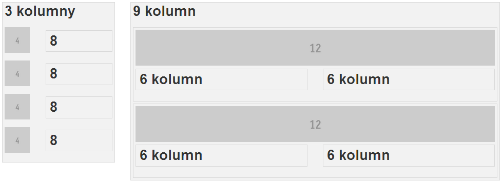

Podbudówka Foundation
Tomasz Netczuk
Mobilization 3, 26 października 2013 r, Łódź
Foundation?
„The most advanced responsive front-end framework in the world.”
- HTML5
- Sass
- Zepto / jQuery
- Mobile first
- Resposive Web Design
Foundation vs Bootstrap
- Sass
- Zepto / jQuery
IE 8- Mobile first
- LESS
- jQuery
- IE 8
- Mobile first (> 3.0)
Oraz różnice w komponentach.
„Sass is the most mature, stable, and powerful professional grade CSS extension language in the world.”
CSS na sterydach: zmienne, zagnieżdzanie, zależności, mixiny, dziedziczenie i obliczenia.
cd. (zmienne, zagnieżdzanie i obliczenia)
$news-color: #E83523;
$base-font-size: 16px;
.news {
background-color: $news-color;
font-size: $base-font-size;
.title {
color: darken($news-color, 50%);
font-size: $base-font-size *2;
}
}
.news {
background-color: #e83523;
font-size: 16px;
}
.news .title {
color: #0b0201;
font-size: 32px;
}
cd. (mixiny)
$news-box-shadow: 7px 7px 5px yellow;
@mixin border-shadow($border-shadow) {
-webkit-box-shadow: $border-shadow;
-moz-box-shadow: $border-shadow;
box-shadow: $border-shadow;
}
.top-menu-item {
@include border-shadow($news-box-shadow);
}
.menu-item {
@include border-shadow($news-box-shadow);
}
.top-menu-item {
-webkit-box-shadow: 7px 7px 5px yellow;
-moz-box-shadow: 7px 7px 5px yellow;
box-shadow: 7px 7px 5px yellow;
}
.menu-item {
-webkit-box-shadow: 7px 7px 5px yellow;
-moz-box-shadow: 7px 7px 5px yellow;
box-shadow: 7px 7px 5px yellow;
}
cd. (dziedziczenie)
.menu-item {
display: block;
}
.main-menu-item {
@extend .menu-item;
width: 80%;
}
.top-menu-item {
@extend .menu-item;
height: 20px;
}
.news {
@extend .menu-item;
background-color: red;
}
.menu-item, .main-menu-item, .top-menu-item,
.news {
display: block;
}
.main-menu-item {
width: 80%;
}
.top-menu-item {
height: 20px;
}
.news {
background-color: red;
}
„Zepto is a minimalist JavaScript library for modern browsers with a largely jQuery-compatible API. If you use jQuery, you already know how to use Zepto.”
zepto.min.js: 26,5 KB vs jquery-2.0.3.min.js: 81,6 KB
Krata (grid) w Foundation
Konfigurowalna z poziomu Sassa (jak wszystkie elementy Foundation).
Zagnieżdzanie kraty
Krata na mobilkach
Specjalne znaczniki dla małych ekranów
Media queries
$small-screen: em-calc(768);
$medium-screen: em-calc(1280);
$large-screen: em-calc(1440);
$screen: "only screen";
$small: "only screen and (min-width:"#{$small-screen}")";
$medium: "only screen and (min-width:"#{$medium-screen}")";
$large: "only screen and (min-width:"#{$large-screen}")";
$landscape: "only screen and (orientation: landscape)";
$portrait: "only screen and (orientation: portrait)";
@media #{$screen} { ... }
@media #{$small} { ... }
@media #{$medium} { ... }
@media #{$large} { ... }
@media #{$landscape} { ... }
@media #{$portrait} { ... }
Klasy widoczności
.show-for-small
.show-for-medium-down
.show-for-medium
.show-for-medium-up
.show-for-large-down
.show-for-large
.show-for-large-up
.show-for-xlarge
.hide-for-small
.hide-for-medium-down
.hide-for-medium
.hide-for-medium-up
.hide-for-large-down
.hide-for-large
.hide-for-large-up
.hide-for-xlarge
.show-for-landscape
.show-for-portrait
.hide-for-landscape
.hide-for-portrait
.show-for-touch
.hide-for-touch
.your-class-name {
@extend .hide-for-small;
}
Moduły Javascript w Foundation
- Abide (sprawdzanie formularzy)
- Clearing (galeria)
- Interchange (dynamiczne doładowywanie odpowiednich rozmiarów obrazków)
- Joyride (przejażdzka po serwisie)
- I inne...
Inne standardowe elementy Foundation
- Przyciski
- Nawigacja
- Typografia
- Formularze
- Gotowe widoki dla powiadomień, ekranów modalnych, itd...
- I inne...
Czyli mamy (niemal) wszystko co potrzeba do szybkiego zbudowania strony z klocków.